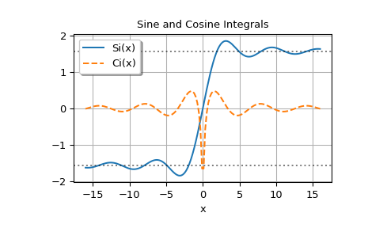

scipy.special.sici#
- scipy.special.sici(x, out=None) = <ufunc 'sici'>#
Sine and cosine integrals.
The sine integral is
\[\int_0^x \frac{\sin{t}}{t}dt\]and the cosine integral is
\[\gamma + \log(x) + \int_0^x \frac{\cos{t} - 1}{t}dt\]where \(\gamma\) is Euler’s constant and \(\log\) is the principal branch of the logarithm [1].
- Parameters:
- xarray_like
Real or complex points at which to compute the sine and cosine integrals.
- outtuple of ndarray, optional
Optional output arrays for the function results
- Returns:
- siscalar or ndarray
Sine integral at
x- ciscalar or ndarray
Cosine integral at
x
See also
Notes
For real arguments with
x < 0,ciis the real part of the cosine integral. For such pointsci(x)andci(x + 0j)differ by a factor of1j*pi.For real arguments the function is computed by calling Cephes’ [2] sici routine. For complex arguments the algorithm is based on Mpmath’s [3] si and ci routines.
References
[1] (1,2)Milton Abramowitz and Irene A. Stegun, eds. Handbook of Mathematical Functions with Formulas, Graphs, and Mathematical Tables. New York: Dover, 1972. (See Section 5.2.)
[2]Cephes Mathematical Functions Library, http://www.netlib.org/cephes/
[3]Fredrik Johansson and others. “mpmath: a Python library for arbitrary-precision floating-point arithmetic” (Version 0.19) http://mpmath.org/
Examples
>>> import numpy as np >>> import matplotlib.pyplot as plt >>> from scipy.special import sici, exp1
siciaccepts real or complex input:>>> sici(2.5) (1.7785201734438267, 0.2858711963653835) >>> sici(2.5 + 3j) ((4.505735874563953+0.06863305018999577j), (0.0793644206906966-2.935510262937543j))
For z in the right half plane, the sine and cosine integrals are related to the exponential integral E1 (implemented in SciPy as
scipy.special.exp1) bySi(z) = (E1(i*z) - E1(-i*z))/2i + pi/2
Ci(z) = -(E1(i*z) + E1(-i*z))/2
See [1] (equations 5.2.21 and 5.2.23).
We can verify these relations:
>>> z = 2 - 3j >>> sici(z) ((4.54751388956229-1.3991965806460565j), (1.408292501520851+2.9836177420296055j))
>>> (exp1(1j*z) - exp1(-1j*z))/2j + np.pi/2 # Same as sine integral (4.54751388956229-1.3991965806460565j)
>>> -(exp1(1j*z) + exp1(-1j*z))/2 # Same as cosine integral (1.408292501520851+2.9836177420296055j)
Plot the functions evaluated on the real axis; the dotted horizontal lines are at pi/2 and -pi/2:
>>> x = np.linspace(-16, 16, 150) >>> si, ci = sici(x)
>>> fig, ax = plt.subplots() >>> ax.plot(x, si, label='Si(x)') >>> ax.plot(x, ci, '--', label='Ci(x)') >>> ax.legend(shadow=True, framealpha=1, loc='upper left') >>> ax.set_xlabel('x') >>> ax.set_title('Sine and Cosine Integrals') >>> ax.axhline(np.pi/2, linestyle=':', alpha=0.5, color='k') >>> ax.axhline(-np.pi/2, linestyle=':', alpha=0.5, color='k') >>> ax.grid(True) >>> plt.show()
